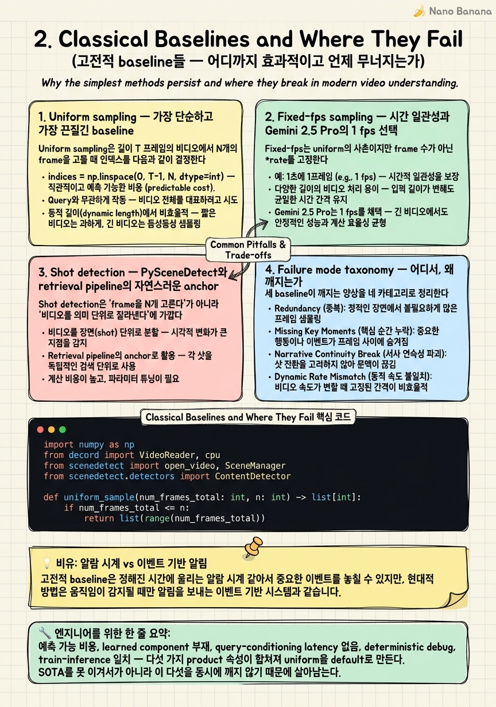

Classical Baselines and Where They Fail

🎯 학습 목표
- Uniform / fixed-fps / shot-based 세 baseline을 수식 수준에서 정의하고 구현 코드를 짤 수 있다
- Qwen2.5-VL fps=2, LLaVA-Video uniform 64, InternVL 16–32 같은 산업 default가 *왜* 그 값으로 정해졌는지 설명할 수 있다
- 주어진 query–video 조합에 대해 어느 baseline이 실패할지 사전에 예측할 수 있다
- PySceneDetect의 threshold·min_scene_len·luma_only 같은 knob을 상황에 맞게 튜닝할 수 있다
- Uniform sampling이 'stupid한 게 아니라 economically optimal'한 영역과 그렇지 않은 영역을 분리해 말할 수 있다
Chapter 1에서 frame sampling이 video LLM의 진짜 병목임을 봤다. 이번 chapter는 그 병목 앞에서 산업이 지금 실제로 쓰는 세 가지 고전 baseline — uniform, fixed-fps, shot detection — 을 정면으로 다룬다. 이 셋은 SOTA 논문이 매년 두 자릿수 %씩 깨고 있음에도 불구하고 Gemini 2.5 Pro, Qwen2.5-VL, LLaVA-Video, InternVL의 default로 그대로 살아 있다. 우리는 먼저 각 baseline의 수학을 정의하고, 그것이 어떤 영역에서 정당화되는지 (짧고 homogeneous한 콘텐츠, 발화 중심 비디오, retrieval index 단계)를 본 뒤, 정확히 어디서 깨지는지를 네 가지 failure mode로 분류한다. 마지막으로 uniform이 영구히 사라지지 않는 경제적·시스템적 이유를 검토한다. 이 chapter를 끝내면 '왜 SOTA가 production에 안 들어가는가'라는 질문에 한 줄로 답할 수 있게 된다 — 답은 알고리즘이 아니라 예측 가능한 비용 함수다.
핵심 내용
1. Uniform sampling — 가장 단순하고 가장 끈질긴 baseline
Uniform sampling은 길이 T 프레임의 비디오에서 N개의 frame을 고를 때 인덱스를 다음과 같이 결정한다.
\[i_k = \text{round}\!\left(\frac{k(T-1)}{N-1}\right), \quad k = 0, 1, \ldots, N-1\]
또는 segment-then-pick 방식으로 [0, T)를 N개의 동일 폭 segment로 나눠 각 segment의 중앙 또는 첫 frame을 고른다. 둘 다 동일하게 'query-agnostic, content-agnostic, deterministic'이다.
이 단순한 함수가 2026년 현재 industry default다.
-
LLaVA-Video-7B / 72B: max_frames_num=64, 그 이상은 uniform downsample.
-
InternVL2.5 / InternVL3: 보통 16–32 frame uniform.
-
Qwen2.5-VL / Qwen3-VL: 명목상 fps=2.0이지만
FPS_MAX_FRAMES=768cap에 걸리면 사실상 uniform으로 downsample된다 (긴 영상에서는 2 fps가 아닌 'uniform 768'로 수렴). -
NVILA / VILA-1.5: 64 frame, context에 들어가는 건 16 frame.
-
VideoChat-Flash: 1 fps + uniform 보조.
8,600 frame짜리 5분 영상을 16 frame으로 줄이면 정보 손실률 은 단순 비율로 99.81%다. 이 손실이 치명적인지는 query와 콘텐츠에 달려 있는데, 핵심은 uniform이 기대값 측면에서 최적이라는 점이다. 콘텐츠와 query에 대한 사전지식이 0일 때, 각 frame이 동등하게 informative하다는 maximum entropy prior 아래에서 uniform sampling은 expected coverage를 최대화한다. 이게 산업이 'stupid한데도 안 버리는' 이유의 절반이다 — 나머지 절반은 비용이고 5절에서 다룬다.
그러나 이 prior가 깨지는 순간 — 정보가 시간축 위에서 강하게 비균등하게 분포할 때 — uniform은 한 번에 무너진다. 예: 60분 강의 중 45분 30초에 한 슬라이드가 잠깐 뜨고 그게 답인 query라면, 16-frame uniform이 그 슬라이드를 잡을 확률은 약 16/T = 16/(60·60·30) ≈ 0.015% per relevant-second. 이게 needle-in-haystack failure의 기본 산수다.
2. Fixed-fps sampling — 시간 일관성과 Gemini 2.5 Pro의 1 fps 선택
Fixed-fps는 uniform의 사촌이지만 frame 수가 아닌 rate를 고정한다.
sampled = [video[round(t · fps_src / fps_target)] for t in range(int(duration · fps_target))]
이 방식의 장점은 시간 일관성이다. 같은 콘텐츠에서 'N=16 uniform'은 1분짜리든 1시간짜리든 같은 frame 수를 주지만 sampling 밀도가 60배 다르고, 'fps=1'은 항상 1초당 1 frame이라 모델이 학습한 temporal density와 inference density가 일치한다.
Gemini 2.5 Pro의 1 fps default는 우연이 아니다.
-
영어/한국어 평균 발화 속도는 분당 130–180 단어 ≈ 초당 2–3 단어다. 1 frame/sec은 화자가 새 문장을 시작할 무렵 시각 context가 한 번씩 갱신되는 셈이다.
-
강의·인터뷰·튜토리얼·뉴스 — 즉 'human-speech-paced' 콘텐츠 — 에서 1 fps는 거의 손실 없이 의미를 보존한다.
-
1M token context와 결합하면 1 fps × 258 tokens/sec ≈ 약 1시간 영상이 default로 들어온다 (Gemini 공식 quoted 수치).
그러나 1 fps는 다음에서 명확히 무너진다.
-
Sports: 축구 슛 모션은 약 0.3초. 1 fps는 그 순간을 정확히 놓치거나 잡거나 binary다.
-
Fight scene / 격투기: 펀치-블록 시퀀스가 200–400ms 단위로 일어남.
-
Magic trick / sleight-of-hand: 의도적으로 1 fps 이상의 속도로 동작이 가려짐.
-
자동차 사고 / 사고 분석: 결정적 frame이 1–3 frame에 압축됨.
반대편 극단으로 fps를 너무 올리면 (예: 30 fps 그대로 1시간) token cost가 폭발한다 — 30 × 3600 × 258 ≈ 2,786만 token. 1 fps라는 선택은 '인간 인지 paced 콘텐츠에 대한 합리적 Nyquist rate'에 가깝다.
3. Shot detection — PySceneDetect와 retrieval pipeline의 자연스러운 anchor
Shot detection은 'frame을 N개 고른다'가 아니라 '비디오를 의미 단위로 잘라낸다'에 가깝다. 사용되는 도구는 사실상 PySceneDetect 하나로 수렴했고, 두 가지 detector가 표준이다.
ContentDetector — frame 간 HSV-space content delta가 threshold(default 27.0)를 넘으면 cut으로 판정. 빠르고 hard cut에 강하다. 부드러운 fade·crossfade는 못 잡는다.
AdaptiveDetector — rolling window 위의 content delta 분포에 대해 적응형 threshold를 잡는다. 조명 변화가 잦은 자연 영상에서 false positive를 줄인다. window·threshold·min_scene_len이 주요 knob다.
중요한 knob:
- threshold (보통 27, 액션·MV는 20까지 낮춤, 슬라이드 강의는 35–40까지 올림)
- min_scene_len (frame 단위, 보통 15 — 0.5초 미만 cut을 합쳐버린다)
- luma_only=True — 색감 변화는 무시하고 밝기만; flash photography 환경에 유용
- weights — content delta의 H/S/V/edge 가중치
Shot boundary가 retrieval pipeline의 anchor로 쓰이는 이유는 명확하다.
-
재현 가능한 chunk: 같은 영상에서 같은 boundary를 다시 얻을 수 있어 index가 안정적이다.
-
semantic locality: 한 shot 내부의 frame들은 거의 항상 동일 scene·동일 화자·동일 setting이라, shot 대표 frame 하나의 embedding으로 그 구간을 retrieve해도 손실이 적다.
-
caption granularity: ASR transcript + shot boundary 정렬로 'shot + 그 안의 발화' 단위 multi-modal chunk가 자연스럽게 잡힌다.
Mixpeek류 video retrieval platform이 uniform이 아닌 scene/shot 기반 chunking을 default로 쓰는 이유가 여기 있다. 그들은 inference time이 아니라 index time에 비용을 지불하므로 한 번 정확한 boundary를 뽑아두면 query 비용은 vector search 한 번으로 끝난다. 반면 video LLM의 inference path는 query마다 sample을 다시 뽑아야 하므로 uniform의 예측 가능 비용이 이긴다 — 이 분리가 chapter의 핵심 통찰이다.
주의점: shot detection만으로는 'shot 내부에서 결정적 순간'을 못 잡는다. 한 shot이 30초짜리 long take일 때 그 안의 0.5초 micro-event는 boundary detector가 보지 못한다. 이게 4절 failure taxonomy의 마지막 항목이다.
4. Failure mode taxonomy — 어디서, 왜 깨지는가
세 baseline이 깨지는 양상을 네 카테고리로 정리한다. 각 항목은 후속 chapter (AKS, BOLT, Frame-Voyager, Q-Frame, FOCUS) 가 정조준하는 문제와 1:1 대응한다.
(a) Needle-in-haystack on long video — 1시간짜리 영상의 단 한 frame만이 정답을 담고 있는 query. Uniform N-frame의 hit probability ≈ N · L_needle / T. N=16, L_needle=1 sec, T=3600 sec이면 0.44%. VideoChat-Flash의 Multi-Hop NIAH가 10K-frame 영상에서 99.1%를 찍은 건 정확히 이 시나리오를 정조준해서다.
(b) Rare event detection — '이 6시간 보안 카메라 영상에서 누가 문을 부쉈나' 같은 query. Event가 시간축 위에서 sparse하므로 query-agnostic sampler는 거의 항상 놓친다. Shot detection이 도움이 되지만 boundary가 잡힌 모든 shot을 LLM에 넘기면 비용이 폭발한다 — 그래서 SigLIP/CLIP score 기반 query-aware 필터 (AKS·BOLT의 핵심) 가 필요해진다.
(c) Multi-event reasoning — '주인공이 안경을 쓴 후 처음으로 누구를 만났는가' 같은 두 event의 순서·연결을 요구하는 query. Uniform은 두 event를 동시에 잡을 확률이 곱셈으로 떨어진다. 학습된 sampler가 두 event의 공동 evidence 를 잡도록 ranking을 학습하는 Frame-Voyager의 'combinational ranking' 동기가 여기다.
(d) Inter-shot reasoning, 즉 shot 사이 정보가 필요한 query — Shot detection의 사각지대. 예: '카메라가 cut 없이 30초 동안 따라간 차량이 어느 골목으로 들어갔는가' — boundary detector에는 single shot, dense sampler에는 그 안의 trajectory가 필요하다. Pure shot-based는 그 30초를 frame 하나로 요약해버린다.
실전에서 query 유형을 사전에 분류해 router로 baseline을 고르는 패턴이 흔하다 — short clip + descriptive query → uniform 16, 강의/인터뷰 → 1 fps, retrieval index 빌드 → shot detection, long-video QA → query-aware adaptive sampler. 이 router 자체가 9장의 plug-and-play architecture 동기다.
5. 왜 uniform이 사라지지 않는가 — 경제적·시스템적 다섯 가지 이유
연구 SOTA (AKS, BOLT, GenS, Q-Frame, FOCUS) 가 매년 두 자릿수 %를 깬다. 그런데도 2026년 Gemini, Qwen2.5-VL, LLaVA-Video, InternVL의 default는 여전히 uniform/fixed-fps다. 다섯 가지 이유가 함께 작동한다.
(1) 예측 가능한 비용 함수 — Uniform N-frame은 입력 영상 길이·콘텐츠·query와 무관하게 정확히 N개의 vision token block을 소비한다. SaaS API 가격책정에서 결정적인 속성이다. Query-aware sampler는 frame 수가 가변이거나 추가 forward pass가 필요해 SLA·과금 모델이 어려워진다.
(2) Learned component 부재 — Uniform은 학습 데이터·체크포인트·라이선스가 없다. Frame-Voyager나 M-LLM Frame Selection은 별도 모델을 동봉하고 관리해야 한다 (또 하나의 model card, 또 하나의 GPU pool).
(3) Query-conditioning latency — Adaptive sampler는 query를 받아서 frame을 다시 고른다. 즉 첫 token latency에 sampler forward가 그대로 더해진다. 인터랙티브 UI에서는 200–500ms가 곧장 보인다.
(4) Benchmark·debug 용이성 — Uniform은 deterministic해서 회귀 테스트가 trivial하다. Adaptive sampler는 동일 영상·동일 query에서도 모델·temperature·seed에 따라 frame 집합이 흔들리고 그 변동이 LLM 출력 변동과 entangle되어 디버깅이 어렵다.
(5) 모델 학습 시점의 가정과 일치 — LLaVA-Video / InternVL / Qwen2.5-VL 모두 학습 단계에서 uniform 혹은 fixed-fps로 frame을 받았다. Inference에서 adaptive sampler를 끼우면 train–inference distribution shift가 생긴다. Hour-LLaVA가 1 fps로 학습부터 한 이유와 같은 결의 압력이다.
결론: uniform은 'optimal algorithm'이 아니라 'optimal product default'다. SOTA를 production에 넣으려면 이 다섯 항목 하나하나에 답해야 한다 — chapter 9에서 plug-and-play 인터페이스로 그 답들을 봉합한다.
💡 비유로 이해하기
Uniform sampling은 알람 시계다. 매 N분마다 무조건 울린다. 당신이 자고 있건, 회의 중이건, 우주가 폭발하건 관계없다. 단순하고 예측 가능하며, 배터리 소비가 정확히 계산된다. 출근 시간을 놓치지 않으려는 목적에는 완벽하다.
Query-aware adaptive sampling은 이벤트 기반 알림이다. 'CEO가 내 이름을 언급할 때만' 울린다. 평소엔 조용하지만 결정적인 순간을 놓치지 않는다. 대가는 명확하다 — 누가 언급했는지 판단할 모델이 항상 돌고 있어야 하고, 그 판단이 틀리면 영원히 안 울린다.
짧은 영상 (회의 5분 요약, 30초 클립 캡션) 에서는 시계 알람이면 충분하다. 어차피 N분 단위로 다 깨어 있다. 1시간 보안 카메라에서 '문 부순 사람을 찾아라'는 query에는 알람이 절대 못 잡는다 — 사건이 23분 17초에 0.4초 동안 일어났기 때문이다. Gemini의 1 fps가 발화 중심 영상에서 거의 손실 없는 이유, 그리고 sports/fight scene에서 무너지는 이유가 정확히 이 비유로 설명된다. 산업이 알람을 안 버리는 건 알람이 멍청해서가 아니라 알람만 있어도 되는 작업이 압도적으로 많기 때문이다.
💻 코드 예시
같은 영상에 세 baseline — uniform N-frame, fixed-fps, PySceneDetect 기반 shot — 을 적용해 어떤 frame index가 뽑히는지 직접 비교한다. Decord로 디코딩하고 PySceneDetect의 ContentDetector를 쓴다. 환경: pip install decord scenedetect[opencv] numpy. 짧은 클립 (~30초) 에서는 셋이 비슷한 결과를, 1시간짜리에서는 완전히 다른 결과를 낸다.
import numpy as np
from decord import VideoReader, cpu
from scenedetect import open_video, SceneManager
from scenedetect.detectors import ContentDetector
def uniform_sample(num_frames_total: int, n: int) -> list[int]:
if num_frames_total <= n:
return list(range(num_frames_total))
return [int(round(k * (num_frames_total - 1) / (n - 1))) for k in range(n)]
def fixed_fps_sample(num_frames_total: int, src_fps: float, target_fps: float) -> list[int]:
duration = num_frames_total / src_fps
n = max(1, int(duration * target_fps))
return [min(num_frames_total - 1, int(round(t * src_fps / target_fps))) for t in range(n)]
def shot_sample(path: str, threshold: float = 27.0, min_scene_len: int = 15) -> list[int]:
video = open_video(path)
sm = SceneManager()
sm.add_detector(ContentDetector(threshold=threshold, min_scene_len=min_scene_len))
sm.detect_scenes(video=video)
scenes = sm.get_scene_list() # list of (start, end) FrameTimecodes
# pick the middle frame of each shot as its representative
return [int((s.get_frames() + e.get_frames()) // 2) for s, e in scenes]
def compare_baselines(path: str, n_uniform: int = 16, target_fps: float = 1.0):
vr = VideoReader(path, ctx=cpu(0))
T, src_fps = len(vr), vr.get_avg_fps()
print(f"video: {T} frames @ {src_fps:.2f} fps ({T/src_fps:.1f}s)")
u = uniform_sample(T, n_uniform)
f = fixed_fps_sample(T, src_fps, target_fps)
s = shot_sample(path)
print(f"uniform-{n_uniform}: {len(u)} frames -> {u[:8]}{'...' if len(u)>8 else ''}")
print(f"fps={target_fps}: {len(f)} frames -> {f[:8]}{'...' if len(f)>8 else ''}")
print(f"shot: {len(s)} frames -> {s[:8]}{'...' if len(s)>8 else ''}")
return {"uniform": u, "fps": f, "shot": s}
if __name__ == "__main__":
compare_baselines("sample.mp4", n_uniform=16, target_fps=1.0)uniform_sample은 첫 frame과 마지막 frame을 포함해 N개를 등간격으로 뽑는다 — LLaVA-Video / InternVL이 쓰는 식. fixed_fps_sample은 target_fps에 맞춰 frame 수가 영상 길이에 비례해 늘어난다 — Gemini 2.5 Pro의 1 fps default가 이 형태다. shot_sample은 PySceneDetect로 shot boundary를 잡고 각 shot의 중앙 frame을 대표로 고른다. 같은 30초 광고 영상에 돌리면 셋이 12–18 frame 정도로 비슷하게 수렴하지만, 1시간 강의에 돌리면 uniform=16, fps=1→약 3,600, shot→슬라이드 전환 수만큼 (~40–80) 으로 완전히 갈라진다. threshold를 20으로 낮추면 빠른 cut이 많은 액션 영상에서 shot 수가 폭증하고, 35로 올리면 슬라이드 강의에서 fade를 무시해 안정적인 boundary를 얻는다. 실전 배포 시 이 세 함수를 동일한 Sampler.select(video, query=None, budget=N) 시그니처 뒤에 숨겨 plug-and-play로 묶는다 — 9장에서 다룬다.
🏭 현업에서의 평가
✅ 시니어가 보는 것
- Qwen2.5-VL의 fps=2 / FPS_MAX_FRAMES=768 같은 구체적 default 값과 그 선택의 근거 (학습 데이터 distribution, token budget) 를 같이 설명할 수 있는가
- Uniform이 무너지는 query 유형을 needle-in-haystack / rare event / multi-event / inter-shot 같은 카테고리로 분류해 말할 수 있는가
- PySceneDetect의 ContentDetector vs AdaptiveDetector 차이, threshold·min_scene_len·luma_only knob의 효과를 콘텐츠 유형별로 설명할 수 있는가
- Gemini 2.5 Pro의 1 fps가 발화 중심 영상에서 합리적인 Nyquist rate라는 점, 그리고 sports에서 깨지는 정확한 이유를 시간 단위로 말할 수 있는가
- Mixpeek류 retrieval pipeline이 uniform이 아닌 shot 기반 chunking을 쓰는 이유 — 비용이 index time에 amortize된다 — 를 설명할 수 있는가
- Adaptive sampler가 production에 못 들어가는 비기술적 이유 (예측 가능 비용, learned dependency, latency, debug 가능성, train–inference shift) 를 적어도 셋 이상 명시할 수 있는가
⚠️ 레드 플래그
- Uniform sampling을 'stupid' 또는 'just a baseline'으로 단정하고 산업이 왜 그것을 default로 유지하는지 답하지 못함
- '그냥 fps=1로 뽑으면 됩니다'처럼 콘텐츠 유형 (강의 vs 스포츠) 을 구분 없이 답함
- PySceneDetect를 모르거나, 안다고 해도 threshold knob 하나도 못 댐
- Shot detection이 inter-shot reasoning에 무력하다는 점을 인지하지 못하고 '모든 long video에 shot이 답'이라고 주장
- Query-aware sampler를 즉시 추천하면서 latency / 비용 변동성 / train–inference shift를 한 마디도 언급하지 않음
🎤 예상 인터뷰 질문
- Q1. Qwen2.5-VL은 fps=2.0을 default로 쓰지만 `FPS_MAX_FRAMES=768` cap이 있습니다. 1시간짜리 영상을 넣었을 때 실제로 뽑히는 frame 수와 effective fps는 어떻게 됩니까? 그리고 그 결과가 'fps=2'라는 명목 설정과 어긋난다는 점이 사용자에게 어떻게 노출됩니까?
- Q2. 2시간짜리 보안 카메라 footage에서 '누군가 문을 부순 순간'을 찾는 query가 들어왔습니다. (a) uniform 32-frame이 그 frame을 잡을 확률을 대략 계산하고, (b) PySceneDetect로 대체했을 때 이득이 있는지, 있다면 어떤 ContentDetector 설정을 쓰겠습니까? (c) 그래도 안 되면 어떤 다음 단계가 필요합니까?
- Q3. Senior 한 명이 'AKS가 LLaVA-Video-72B를 7B로 이긴다는데 왜 우리 API default는 아직 uniform이냐'고 묻습니다. 비용·latency·debug 가능성·train-inference shift 관점에서 두 문장으로 답해 보세요. 그리고 어떤 조건에서 그 default를 바꾸자고 제안하겠습니까?
✨ 핵심 요약
Uniform은 알고리즘이 아니라 product default다
예측 가능 비용, learned component 부재, query-conditioning latency 없음, deterministic debug, train–inference 일치 — 다섯 가지 product 속성이 합쳐져 uniform을 default로 만든다. SOTA를 못 이겨서가 아니라 이 다섯을 동시에 깨지 않기 때문에 살아남는다.
Qwen2.5-VL fps=2는 FPS_MAX_FRAMES=768 cap과 함께 읽어야 한다
1시간 영상에서는 fps=2가 7,200 frame을 의미하지만 실제로는 cap에 걸려 effective fps ≈ 0.21이 된다. 'fps=2 default'는 짧고 중간 길이 영상에서만 진짜 fps=2다. 사용자에게 이 비선형성이 노출되지 않으면 silent failure가 된다.
Gemini의 1 fps는 발화 paced 콘텐츠에 대한 합리적 Nyquist rate다
분당 130–180 단어 화법은 약 1 sentence/sec, 1 frame/sec은 그 단위마다 시각 context를 한 번 갱신한다. 강의·인터뷰·뉴스·튜토리얼에서 거의 손실이 없다. Sports·격투·magic trick·사고 영상에서는 0.2–0.4초 결정 frame을 놓치므로 즉시 무너진다.
PySceneDetect는 anchor용이지 sampler가 아니다
Shot boundary는 안정적이고 재현 가능한 chunk anchor라서 Mixpeek류 retrieval에 이상적이지만, 한 shot이 30초 long take라면 그 안의 micro-event는 못 잡는다. ContentDetector(threshold=27, min_scene_len=15) 가 일반 default이고 액션/슬라이드 콘텐츠마다 별도 튜닝이 필요하다.
Failure mode는 네 가지로 분류된다
Needle-in-haystack, rare event, multi-event reasoning, inter-shot reasoning. 후속 chapter (AKS·BOLT·Frame-Voyager·Q-Frame·FOCUS) 는 이 네 카테고리에 1:1로 대응하는 해법을 제시한다. baseline 비판은 이 분류 없이는 흐릿하다.
Index time vs inference time이 비용 구조를 가른다
Retrieval 시스템은 비용을 index 단계에서 한 번 지불하고 query는 vector search 한 번으로 끝낸다 — 그래서 shot detection 같은 정교한 chunking이 정당화된다. Video LLM의 inference path는 query마다 sample을 다시 뽑으므로 uniform의 예측 가능 비용이 이긴다. 같은 영상에 두 baseline이 공존하는 이유다.
Adaptive를 production에 넣으려면 다섯 항목에 답해야 한다
비용 예측 가능성, learned model 운영 부담, query-conditioning latency, deterministic debug, train–inference distribution shift. 새 sampler를 도입할 때 이 다섯에 대한 답을 가지고 가지 않으면 정확도가 올라도 SRE 단계에서 거절된다.
Router는 baseline을 죽이지 않고 살린다
실전 architecture는 'short clip → uniform 16, 발화 중심 → 1 fps, retrieval index → shot, long-video QA → adaptive'를 query 유형별로 라우팅한다. baseline은 폐기되는 게 아니라 적합 영역으로 *압축*된다 — 9장 plug-and-play 인터페이스의 동기다.